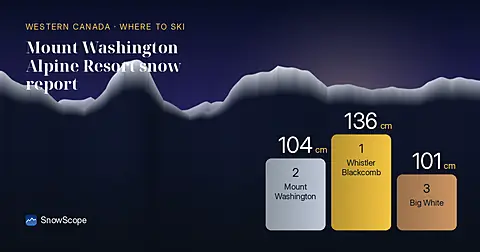
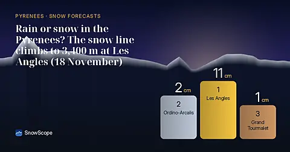
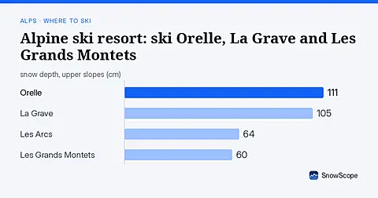
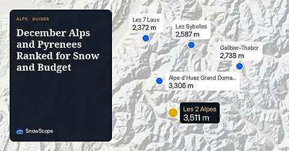
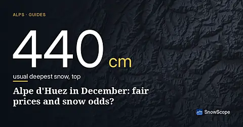
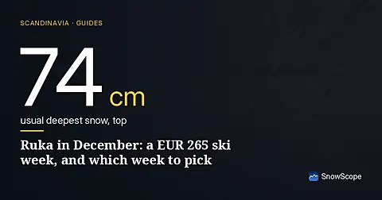
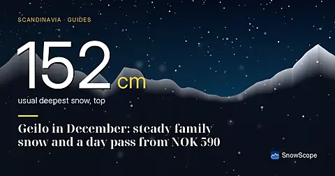
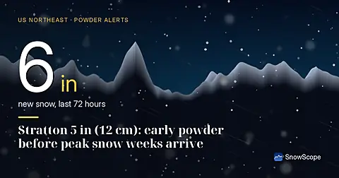
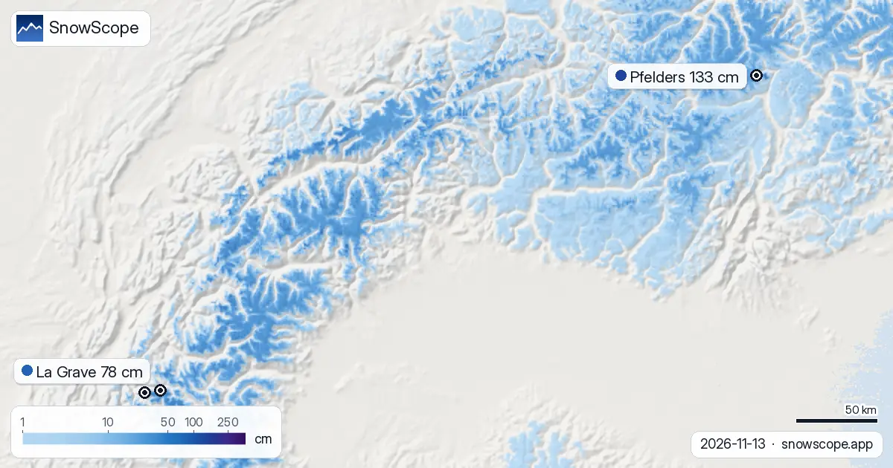

Snow reports · Where to ski
Daily snow reports for skiers: where the snow is, what is coming and where to ski, from the SnowScope snow map and measuring stations. Every number comes from that day's data.

49 in (125 cm): that is the snow on the upper slopes of Telluride today. If you want the most snow in the US West today, look at Telluride: about …

Six days of skiing from 191 EUR: we ranked ten cheap ski weeks in Europe by price, then checked 46 past winters to see where the snow is reliable.

The Pyrenees will see 91 cm of new snow in the next 14 days, with half falling in week 1. Upper slopes above 2500 m get the most. Forecast from 2026-11-18.

New snow forecast for 15 Japanese ski resorts from 20 to 25 November: Hakuba and Tsugaike lead with about 90 to 97 cm at the top, Niseko about 35 cm.

Snow-covered area jumped from 560 to 1,710 km² between November 17 and 19. Piau-Engaly holds the deepest snow at 15 cm on upper slopes as of November 19.


Only 16 US Northeast resorts have snow on 18 November. Tuckerman Ravine leads with 38 cm (15 in) on upper slopes. Early-season cover is fragile; stick to groomed runs.

US West snow report, 18 November. Forecast to 21 November: 33 in (83 cm) at China Peak, 30 in (77 cm) at Mammoth Mountain and 28 in (70 cm) at June …

Mount Washington Alpine Resort snow report: 104 cm up top (Western Canada, 18 November). At 1,456 m on Whistler Blackcomb the season is late: our …

Where should you go skiing in the US West? If we were going this weekend, we would choose Palisades Tahoe Alpine Meadows, Kingvale and Boreal, based …

Freezing level reaches 1,500 m at Banff Sunshine Village on November 19. Fresh snow fell across Western Canada in the last 72 hours, but rain threatens the new powder.

Crested Butte snow report: 38 in up top (US West, 18 November). This is a good start at Telluride. At 10,620 ft (3,237 m), our model has 22 in …

Western Canada forecast: 90 cm new snow at Mount Washington in the next two weeks, with 70 cm expected in late November and early December. Model run 2026-11-18.

Fresh snow across the US West has built depths well above normal. At Palisades Tahoe Alpine Meadows, upper slopes hold 75 cm (measured 2026-11-18), compared to 10 cm typical for mid-November.

Zermatt has 47 cm on upper slopes today, 690% above the November median. The 0°C level stays above 2200 m through Friday.

Over the next days the 0 °C level in the Pyrenees should move between 1,900 m and 3,670 m, according to our forecast. At the warmest time of day the …

The Pyrenees will see up to 63 cm of new snow in the next 14 days, with 70% falling in week one. Best snow expected above 2000 m.

New snow forecast for the Alps through early December. Saint François Longchamp leads with 228 cm expected over 14 days, starting with 35 cm on Thursday.

Alps snow report, 18 November. We weighed the snow already on the ground, the new snow of the last 72 hours and what the forecast adds, and picked …

No new snow forecast for Jbel Hebri or Oukaïmeden in the next 14 days. The Atlas mountains remain snowless as November progresses.

Glacier 3000 snow forecast compared with the region: 96 cm by 21 November. The snow cover shrank from 63,230 km² on 16 November to 60,480 km² today, …


96 cm of new snow forecast for Les Arcs over the next three days, with today bringing the heaviest falls; model run November 16.

The two-week picture in the US West, 17 November to 30 November, drawn from the two global models that reach two weeks, ECMWF and GFS. Middle of the …

Whistler Blackcomb saw 76 cm of new snow in the last 72 hours, with Mount Cain Alpine Park also receiving 64 cm, as of November 16, 2026.

Despite 60 cm of fresh snow in 72 hours, Scandinavia's mid-November depths are well below average as of 16 November.

Riksgränsen dominates Scandinavia with 173 cm of snow depth measured on 16 November, holding far more mountain water than any rival resort in the region.

The early-winter snowpack in the Alps is building unevenly, and height makes all the difference. Today the deepest snow in the Alps is at La Grave …

Is there snow in the Atlas today? There is no snow on the Atlas ski slopes today. Snow is stored only on the highest summits: about 20 km² of ground, …

The snow has pulled back since 13 November, from 6,880 sq mi (17,820 km²) to 6,039 sq mi (15,640 km²) today; for 18 November our forecast gives …

Snow-covered area: 258,160 km² on 13 November, 253,880 km² today, 298,900 km² forecast for 18 November. The map is getting less white. Three inputs, …

Pyrenees snow report, 15 November. Mixed rain and snow: snow is expected only up high, about 7–19 cm near the top of Cauterets Cirque du Lys …

At Big White on 15 November, the upper slopes hold 68 cm near the summit while the base remains bare; an extreme vertical gradient typical of early season.

79 cm new snow forecast for Les Grands Montets from 16–18 November, mostly above 2000 m elevation, based on forecast from 15 November.

Rain forecast as freezing level climbs to 4080 m; snow measured on 15 November is thin (under 20 cm) at all major Pyrenees resorts.

Picking a resort in the US Northeast comes down to three things: how deep the snow is, how fresh it is, and what is still to come. We weighed the …

Les Deux Alpes: how much fresh snow fell? 38 cm in 72 hours (15 November). Where did the most fresh snow fall in the Alps? La Grave got 41 cm of new …

Manning Park Resort has 22 percent of normal snow on 2026-11-15, with best historical snow arriving in weeks 12-14, still months away.

Krvavec December skiing: day pass EUR 47, 6 days EUR 205, yet only 13 cm at mid-mountain on a typical 15 December and 11 of 46 winters bare that day.

Ski 157 km of mapped runs in Serre Chevalier where the top of the mountain has a 100 % chance of snow by mid-December.

Turracher Höhe in December: 23 cm mid-mountain on a typical 15 December, 39 % of winters with 30 cm before Christmas; 6-day low-season pass EUR 353.

Hochkar December skiing: day tickets seen from EUR 32.90 to 47.90 on December dates; 38 cm mid-mountain on a typical 15 December, falling since the 1980s.

Idre Fjäll December skiing: 32 cm mid-mountain on a typical 15 December; 65 % of winters with 30 cm in mid-December, 76 % in Christmas week. Honest odds.

Ten European ski resorts ranked for December value, led by Les 2 Alpes with 75 cm of mid-mountain snow.

Boí Taüll starts at 2039 m and beats Baqueira Beret on day-pass price, though early December snow still takes some patience.

Sälen December skiing: 28 cm on a typical 15 December and 48 % of winters with 30 cm in mid-December, down from the 1980s; Trysil next door does better.

Orcières Merlette offers a high base at 1826 m and a 6-day pass from 227 EUR, making it a reliable choice for a December ski trip.

Is Alpe d'Huez worth it for December 2026? We check the snow odds, the starting price of 58.00 EUR, and compare it with Les 2 Alpes.

Slovenia's ski passes are the cheapest (Krvavec EUR 205 for 6 days), but natural December snow there is rare; Lachtal, the Hochkar and the Mölltal glacier do better.

Cauterets offers 25 km of runs for 46 EUR, but our snow history shows that the best chance for cover is the last week of December.

Lachtal December skiing: day pass EUR 62, children up to 6 free, 46 cm mid-mountain on a typical 15 December, but a clear downward trend.

Ski the 131 km of runs in the Forêt Blanche this December with a six-day pass for 298 EUR.

Ruka December skiing: 6-day pass EUR 265, day EUR 58; 36 cm on a typical 15 December, but only 39 % of winters with 30 cm in the first week.

Monterosa Ski day passes run from 40.00 to 71.00 EUR online. In December the snow is up high: 124 cm usual at 3030 m, 6 cm at 1207 m.

Fellhorn/Kanzelwand December skiing: 63 cm at the 1965 m top on a typical 15 December, 10 cm at the bottom; Advent 6-day pass EUR 344.50 until 20 December.

Plan your December 2026 trip to Les Orres by matching weekly pass prices with our snow history of 46 past winters.

Hemavan December skiing: 82 cm mid-mountain on a typical 15 December, every winter with 30 cm there in mid-December; the deepest December of our Nordic set.

Compare Grandvalira and Spanish resorts in December 2026 for snow depths, lift heights, and prices starting from 49.00 EUR.

Pitztal Glacier December skiing: 87 cm mid-mountain on a typical 15 December, December snow up since the 1980s; day pass EUR 77, 6 days EUR 410.

For a low-cost December family ski week at Astún-Candanchú, aim for late December when top slopes hold good snow in 67 % of past winters.

Germany in December: the Zugspitze and the Fellhorn top had 30 cm in at least 9 of 10 winters in mid-December; Sudelfeld, Brauneck and the Feldberg rarely do.

Puy-Saint-Vincent pairs a 44 EUR adult 1-day pass with solid December snow higher up, compared here with its big neighbour Serre Chevalier.

Oppdal December skiing: 60 cm at the 585 m base on a typical 15 December, 93 % of winters with 30 cm there in mid-December, better than Trysil's base.

Grimentz-Zinal offers 71 km of runs and reliable high-altitude snow for your December trip, with 6-day passes at CHF 339.00.

Austria before Christmas: Galtür EUR 258 and Kühtai EUR 269 for 6 days with 30 cm in over 90 % of winters; glaciers cost more, small hills are a gamble.

Planning a December trip to Baqueira Beret? See our snow history, ticket prices starting at 70,00 € for a 1-day pass, and how it compares to Astún-Candanchú.

We rank French ski resorts by December snow odds and checked pass prices, starting from 36.00 EUR for an adult day pass in Les Karellis.

Galtür December skiing: 55 cm mid-mountain on a typical 15 December, 93 % of winters with 30 cm in mid-December; low-season day pass EUR 55.50 until 18 December.

Geilo December skiing: 57 cm mid-mountain on a typical 15 December, 96 % of winters with 30 cm in mid-December; day passes from NOK 590 (about EUR 56).

Grandvalira is often sold as cheap December skiing, yet natural snow at the base averages just 9 cm in past winters.

Hemsedal December skiing: 70 cm mid-mountain and 106 cm at the top on a typical 15 December, but 32 cm at the base; Geilo nearby from NOK 590 a day.

Hintertux Glacier December skiing: 98 cm at 3245 m and 52 cm mid-mountain on a typical 15 December; day pass EUR 82, 6 days EUR 399, small children free.

Compare December snow odds and checked lift pass prices starting at 40.00 EUR across Italian ski areas for your weekend drive.

Kühtai December skiing: 60 cm at the 1939 m base on a typical 15 December, and a low-season 6-day pass of EUR 269 until 18 December.

Les 2 Alpes reaches 3511 m for high snow in December 2026, with an adult 6-day pass priced at 266.50 EUR.

Les Karellis offers 45 km of runs and a 6-day adult pass for 191.00 EUR with a 98 % chance of snow mid-mountain in late December.

Levi December skiing: 38 cm on a typical 15 December, 91 % of winters with 30 cm in Christmas week, and December snow up, not down; day pass EUR 60, EUR 57 online.

Ski Livigno for 51.50 EUR per day before December 18 when the snow at the top reaches 30cm in 100 % of past winters.

Montgenèvre has 56 cm of usual December snow at its base, giving weekend drivers deeper early cover than Sestriere across the border.

Obertauern December skiing: 43 cm on a typical 15 December at mid-mountain, and a 6-day pass of EUR 331 before Christmas. Snow history and prices.

Pila above Aosta pairs a flat 60.00 EUR day pass with reliable December snow on its upper slopes.

Saas-Fee lifts reach 3556 m where our snow history shows 100 % of past winters have at least 30 cm of snow by mid-December.

12 Nordic resorts in December: Hemavan, Hemsedal and Geilo had 30 cm at mid-mountain in mid-December in 96-100 % of winters; Finnish day passes EUR 58-60.

Discover the calm slopes of St-Luc Chandolin where mid-mountain snow has reached 30 cm in 98 % of winters during late December.

Trysil December skiing: 44 cm mid-mountain on a typical 15 December, 83 % of winters with 30 cm in mid-December; prices are dynamic, so book early.

Valloire-Valmeinier offers 131 km of runs and a 98 % chance of 30 cm of snow at mid-mountain by mid-December.

Zugspitze December skiing: 122 cm at 2627 m on a typical 15 December, adult day ticket EUR 70.50 online; Garmisch-Classic below it EUR 69 with far less snow.

Mölltaler Gletscher December skiing: 66 cm at the 2103 m bottom lift and 128 cm mid-mountain on a typical 15 December; low-season 6-day pass EUR 332.

Can a cautious first-timer trust Courmayeur in December when mid-mountain averages 60 cm of snow across our past winters?

The white area on the map went from 910 km² (12 November) to 1,100 km² today, and the forecast says 640 km² on 17 November. Mixed rain and snow: snow …

Alps snow report, 14 November. If you want the most snow in the Alps today, look at Saint-Luc (Switzerland): about 110 cm up high. After it come …

Åre December skiing: 40 cm mid-mountain on a typical 15 December, 89 % of winters with 30 cm in mid-December, but a sharp fall at the top since the 1980s.

Read the snow in the Pyrenees today and you get fresh powder, thin early-season snow and warm air that can leave a crust. So here is the kit list, …

Les Deux Alpes: 38–42 cm of fresh snow in 72 hours (Alps, 14 November). La Grave got 53 cm of new snow in the last 72 hours, 7 cm of it in the last …

Mt. Shasta Ski Park's upper slopes hold 20 cm (2026-11-13), but the base is bare with rain below 2020 m. Next: 32 cm forecast.

Between now and 16 November we expect 5 in (12 cm) at Stowe, 4 in (11 cm) at Bolton Valley Resort and 4 in (10 cm) at Sugarbush Resort. Remember that …

The snow is not done yet: we expect 13 in (34 cm) at Bear Valley, 13 in (34 cm) at Dodge Ridge and 13 in (33 cm) at Badger Pass by 16 November. A …

Stratton has 5 in (12 cm) on 2026-11-13 after 72 hours of snow. 28 Northeast resorts now have cover. Small amounts continue; best powder weeks arrive much later.

Telluride has 39 inches today. Peak snow weeks historically arrive in late December and March, not November.

Revelstoke snow forecast: up to 10–21 cm expected by 16 November (Western Canada). At Whistler Blackcomb, the freezing level reaches 1,500 m to …

Model plus forecast in the Alps today gives fresh powder. What to wear, what to pack and when to ski, resort by resort. Packing advice comes with …

Dévoluy snow outlook: in line for 24–32 cm by 16 November (Alps). The next few days look decidedly unsettled in the Alps, with the heaviest snow …

The snow-covered area has grown from 39,090 km² on 11 November to 76,100 km² today, and our forecast gives 57,910 km² on 16 November: more ground is …

Snow in the Atlas is fleeting at this time of year, so every day's picture matters. The Atlas ski resorts hold no snow on their slopes today. Snow is …

Our picks are La Grave, Pfelders and Les Deux Alpes: we looked at today's snow depth, the new snow of the last 72 hours and the forecast. Of the …

The 0 °C level decides whether the mountains store snow or shed rain: over the next days our forecast puts it between 2,230 m and 2,820 m in the …

La Grave leads the Alps with 78 centimetres and 61 centimetres of fresh snow in 72 hours, as 33 centimetres more is forecast.

Our forecast has the 0 °C level in the US Northeast between 0 ft (0 m) and 4,593 ft (1,400 m) in the coming days. On Thursday 12 November, in the …

Between 1,380 m and 3,410 m: that is where our forecast puts the 0 °C level in Western Canada over the next days. In the warmest hours the snow line, …

Today's maps look two weeks ahead in the Pyrenees, 13 November to 26 November. They come from the two global models that reach two weeks, ECMWF and …

Where will it snow in the US Northeast between 13 November and 26 November, and how much? We asked the two global models that reach two weeks, ECMWF …

Western Canada mountains carry 42% of their normal snow for mid-November as of 12 November, but 142 cm is forecast over the next two weeks.

Telluride's mid-slopes show 9 in (24 cm), running 92 percent of the seasonal average for mid-November. Saturday's system adds 5 in (13 cm) mostly above 10,000 ft.

Saint François Longchamp sits at just 3 cm of snow, 12% of usual depth for this time, but 110 cm is forecast in the next two weeks.

Here are the new maps of the next two weeks in the Atlas (Morocco), 13 November to 26 November: the new snow expected on the terrain, read from the …

Forecast from November 12: US West gets 11 in (27 cm) of new snow Saturday November 14; 56 resorts receive powder, busy week starts.

Whistler Blackcomb, 116 cm of snow: today's depth on the upper slopes (12 November). 162 cm: that is the snow on the upper slopes of Mount Washington …

Kirkwood snow outlook: in line for 16 in by 15 November (US West). The next few days look decidedly unsettled in the US West, with the heaviest snow …

Mount Cain Alpine Park fresh snow compared with the region: 15 cm in 72 hours (12 November). The snow cover shrank from 281,250 km² on 10 November to …

Cimarron Mountain Club, 39 in of snow: today's depth on the upper slopes (12 November). 42 in (106 cm): that is the snow on the upper slopes of …